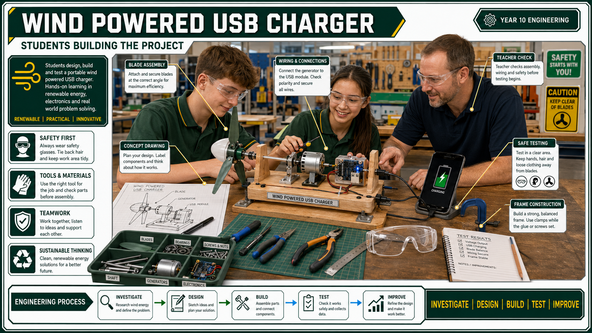

Teacher Check 1: Build Readiness
- Final design fits inside the size limit.
- Generator, shaft and impellor positions are shown.
- Materials and fixings are selected.
- WHS controls are identified.
- Construction sequence is sensible.
Prototype evidence, output testing, improvements and folio

This toolkit brings the project together: build the prototype safely, test output in a controlled way, improve one or two design features, and use evidence to explain what worked.
| Hazard | Risk | Control |
|---|---|---|
| Cutting and drilling | Medium | Wear PPE, clamp work, use correct tools and follow teacher instruction. |
| Rotating impellor | Medium | Keep hands, hair and loose clothing clear during testing. |
| Electrical output | Low | Use low-voltage components only and get teacher approval before connecting devices. |
| Unstable frame | Medium | Test on a clear bench, secure the model and stand outside the impellor path. |
The master folio requires an evaluation of the concept model, photos of the presentation model, testing method, test results, a success judgement and final evaluation. The assessment task also requires WHS, resources, terminology, societal/environmental implications and design processes. This page maps the build and evaluation work to Stage 5 Engineering specialisation outcomes EGT5-SAF-01, EGT5-COM-01, EGT5-EVL-01, EGT5-IVT-01, EGT5-USE-01 and EGT5-ENV-01, and to the older IND5 practical, WHS, materials, communication and evaluation outcomes.
| Folio section | Evidence required | Quality check |
|---|---|---|
| Evaluation of concept model | Performance versus expectation, problems, design changes and justifications. | Uses specific observations, not just "it worked". |
| Presentation model | At least two photos of the finished model with captions. | Photos show the whole model and important details. |
| Testing | Testing method, test results and success judgement. | Method is repeatable and results are recorded clearly. |
| Final evaluation | What went well, what did not go as planned, what would change. | Judgement links to data, construction quality, WHS and sustainability. |
| Peer feedback | One useful comment from another student or teacher before final evaluation. | Feedback leads to a recorded improvement, retest or clearer report evidence. |
| Technical graphics link | Final build is compared with the drawing or Onshape model. | Checks whether the constructed solution matches the AS 1100-style drawing intent. |
| Costing/resource reflection | Material use, waste, component choice and resource efficiency are considered. | Connects the practical model to sustainability and project-management content. |
A good build starts with a checked design. The charger has small rotating parts, a small generator shaft and electrical output, so rushing into construction usually creates avoidable problems.
Build quality affects performance. A charger with a clever blade design can still fail if the frame is crooked, the shaft rubs, the generator twists or the USB module hangs loose.
| Build feature | Good evidence | Problem sign |
|---|---|---|
| Frame | Square, stable, compact and strong enough for testing. | Rocks on the bench, flexes under load or falls outside the size limit. |
| Impellor | Balanced, secure on the shaft and clear of all supports. | Wobbles, scrapes, throws air unevenly or slips on the hub. |
| Shaft support | Rotates freely with little side movement. | Binds, bends or vibrates at higher speed. |
| Generator mount | Held firmly and aligned with the shaft or gear train. | Moves during testing or pulls wires tight. |
| Electrical output | Connections secure, polarity checked and USB module protected. | Loose wires, intermittent readings or unsafe device connection. |
Testing must be fair enough to compare changes. If students change the wind source, blade angle, distance and gear setup all at once, the results will be a mess. One change at a time. Boring? Yes. Useful? Also yes.
| Test | Setup | Variable changed | Output/result | Observations | Next action |
|---|---|---|---|---|---|
| 1 | Baseline blade, direct drive, fan at same distance | None | Record reading or qualitative result | Starts slowly, slight wobble, no rubbing | Improve blade balance |
| 2 | Same as Test 1 | Blade angle increased | Record result | Higher speed but more vibration | Reduce angle slightly |
| 3 | Same blade as best test | Gear-up drive added | Record result | Harder to start, possible friction | Check gear alignment |
Students can add rows as needed. The table should show cause and effect: what changed, what happened, and what the next design decision was.
| Problem | Likely causes | Useful fix |
|---|---|---|
| Impellor does not start | Too heavy, too much friction, poor blade angle, generator load too high. | Lighten blades, reduce friction, adjust pitch, test without gear train. |
| Impellor wobbles | Unbalanced blades, loose hub, bent shaft or unsupported frame. | Balance blades, tighten hub, add support, improve alignment. |
| Output is weak | Generator spinning too slowly, slipping drive, poor wind capture. | Improve blade design, reduce friction, try gear-up drive carefully. |
| Output cuts in and out | Loose wires, unstable USB module, vibration, poor connection. | Secure wiring, strain relief, teacher check, retest under controlled conditions. |
| Gears bind | Incorrect centre distance, poor alignment, teeth rubbing, weak frame. | Reposition gears, support shafts, check spacing, lubricate only if teacher approves. |
| Frame moves during test | Base too small, wind force too high, poor clamping or weak joints. | Widen/stiffen base, clamp safely, reduce wind speed for early tests. |
Success is not just charging a phone. The task asks for a portable phone charging station, but the classroom prototype should be evaluated across multiple criteria.
| Criterion | Strong evaluation evidence |
|---|---|
| Function | Impellor rotates, drives generator and produces approved output evidence. |
| Efficiency | Design changes are compared using fair test data. |
| Portability | Model is compact, self-contained and fits the required box. |
| Safety | Rotating parts, tools and low-voltage testing were controlled. |
| Construction quality | Frame is stable, parts are aligned and the finish is tidy. |
| Aesthetics | Presentation model is neat and communicates the idea clearly. |
| Sustainability | Material choices, waste, reuse, recyclability and energy context are discussed. |
A strong evaluation links evidence, engineering theory and improvement. It should sound like an engineer reviewing a prototype, not a student trying to survive the last five minutes of the lesson.
A teacher check confirms that the frame is stable, rotating parts are clear, wiring is secure, polarity is correct and the output will be tested with approved equipment. It reduces the chance of damage, injury or unreliable data.
Controlled steps let students observe wobble, vibration, loose parts, voltage changes and wiring faults before the risk increases. Small steps also produce better data because each change can be linked to the result.
Stop the test, move clear of the spinning parts, power down or remove wind input if safe, and tell the teacher. Then inspect blade balance, shaft support, frame alignment and loose fixings before retesting.
Useful data includes test conditions, wind source or speed setting, voltage or output reading, blade design, gear setup, faults observed, changes made and retest results. Photos or short notes help prove what happened.
Changing one feature at a time makes the test fair. If blade angle, gearing and generator position all change together, students cannot tell which change improved or reduced performance.
A strong answer uses evidence. It states whether the model stayed within 250 x 150 x 100 mm, whether it operated safely, whether it produced useful output, and what test data supports that judgement.
The folio should include build photos, teacher check notes, a test table, fault-finding notes, improvement evidence, retest results and a final evaluation paragraph that uses data rather than just saying it worked.
A worthwhile change is linked to evidence. Examples include improving blade pitch, reducing friction, strengthening the frame, changing gear ratio, protecting wiring or improving the test setup because the first version showed a specific weakness.